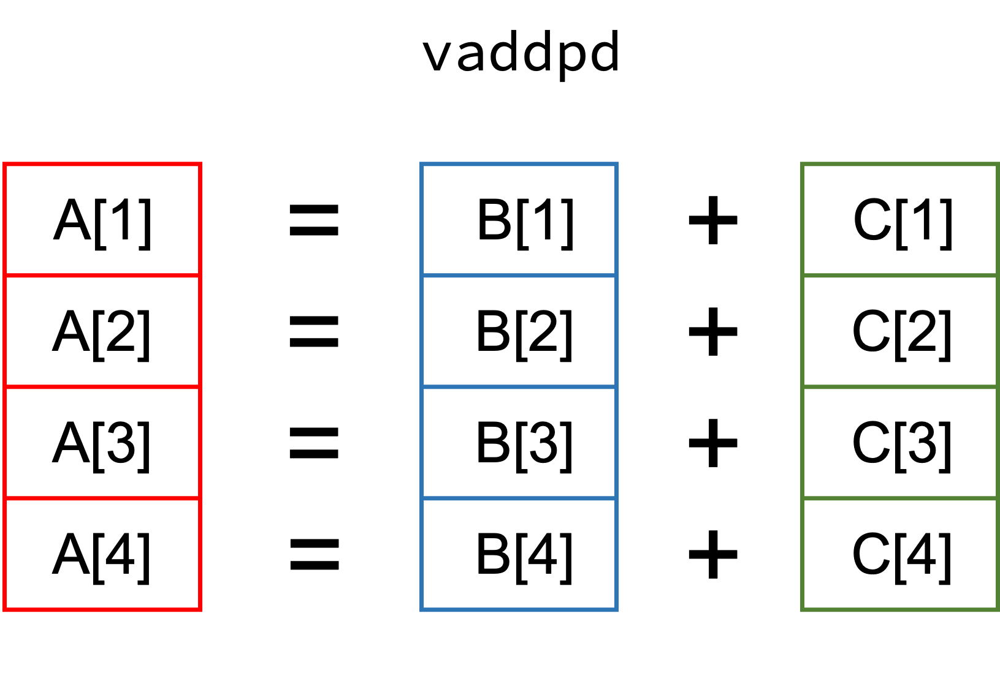
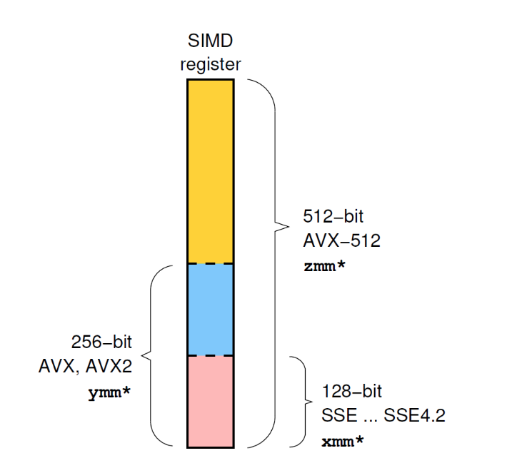

SIMD
Contents
SIMD#
SIMD stands for “Single Instruction Multiple Data” and falls into the category of instruction level parallelism (vector instructions). Consider this simple example where A, B, and C are vectors:
function vector_add(A, B, C)
for i in eachindex(A, B, C)
@inbounds A[i] = B[i] + C[i]
end
end
The idea behind SIMD is to perform the add instruction on multiple elements at the same time (instead of separately performing them one after another). The process of splitting up the simple loop addition into multiple vector additions is often denoted as “loop vectorization”. Since each vectorized addition happens at instruction level, i.e. within a CPU core, the feature set of the CPU determines how many elements we can process in one go.
Summary#
 (Source: Node-level performance engineering course by NHR@FAU)
Let’s check which “advanced vector extensions” (AVX) the system supports.
using CpuId
cpuinfo()
filter(x -> contains(string(x), "AVX"), cpufeatures())
SIZE = 512 * 100
A = rand(Float64, SIZE)
B = rand(Float64, SIZE)
C = rand(Float64, SIZE);
@code_native debuginfo=:none syntax = :intel vector_add(A, B, C)
It’s not always so simple: Reduction#
function vector_dot(B, C)
a = zero(eltype(B))
for i in eachindex(B, C)
@inbounds a += B[i] * C[i]
end
return a
end
@code_native debuginfo=:none syntax = :intel vector_dot(B, C)
Note the vaddsd instruction and usage of xmmi registers (128 bit).
How could this loop be vectorized?
function vector_dot_unrolled4(B, C)
a1 = zero(eltype(B))
a2 = zero(eltype(B))
a3 = zero(eltype(B))
a4 = zero(eltype(B))
@inbounds for i in 1:4:length(B)-4
a1 += B[i] * C[i]
a2 += B[i+1] * C[i+1]
a3 += B[i+2] * C[i+2]
a4 += B[i+3] * C[i+3]
end
return a1 + a2 + a3 + a4
end
@code_native debuginfo=:none syntax = :intel vector_dot_unrolled4(B, C)
using BenchmarkTools
@btime vector_dot($B, $C);
@btime vector_dot_unrolled4($B, $C);
To “force” automatic SIMD vectorization in Julia, you can use the @simd macro.
function vector_dot_simd(B, C)
a = zero(eltype(B))
@simd for i in eachindex(B, C)
@inbounds a += B[i] * C[i]
end
return a
end
By using the @simd macro, we are asserting several properties of the loop:
It is safe to execute iterations in arbitrary or overlapping order, with special consideration for reduction variables.
Floating-point operations on reduction variables can be reordered, possibly causing different results than without
@simd.
@btime vector_dot_simd($B, $C);
This is a huge speedup for just a little extra @simd!
@code_native debuginfo=:none syntax = :intel vector_dot_simd(B, C)
Note the vfmadd231pd instruction and usage of ymmi AVX registers (256 bit).
Data types matter:
Floating-point addition is non-associative and the order of operations is important.
Integer addition is associative and the order of operations has no impact.
Let’s check what happens for Int64 input.
B_int = rand(Int64, SIZE)
C_int = rand(Int64, SIZE)
@btime vector_dot($B_int, $C_int);
@btime vector_dot_simd($B_int, $C_int);
As expected, there is no difference between the two variants.
SIMD is hard…#
Autovectorization is a hard problem (it needs to prove a lot of things about the code!)
Not every code / loop is readily vectorizable
Keep your loops simple, e.g. avoid conditionals, control flow, and function calls if possible!
Loop length should be countable up front
Contiguous data access
(Align data structures to SIMD width boundary)
Keep it simple!
LoopVectorization.jl#
Think of @turbo as a more sophisticated version of @simd. Hopefully, these features will at some point just be part of Julia’s compiler.
using LoopVectorization
function vector_dot_turbo(B, C)
a = zero(eltype(B))
@turbo for i in eachindex(B, C)
@inbounds a += B[i] * C[i]
end
return a
end
@btime vector_dot_simd($B, $C);
@btime vector_dot_turbo($B, $C);
@code_native debuginfo=:none syntax = :intel vector_dot_turbo(B, C)
Note the usage of the zmmi AVX512 registers! (512 bit)
Structure of Array vs Array of Structure#
Data layout can matter!
# Array of structure
AoS = [complex(rand(), rand()) for i in 1:SIZE]
@btime sum($AoS);
StructArrays.jl#
using StructArrays
SoA = StructArray{Complex}((rand(SIZE), rand(SIZE)))
@btime sum($SoA);
Resources: